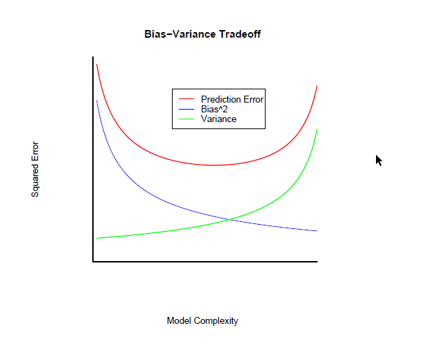
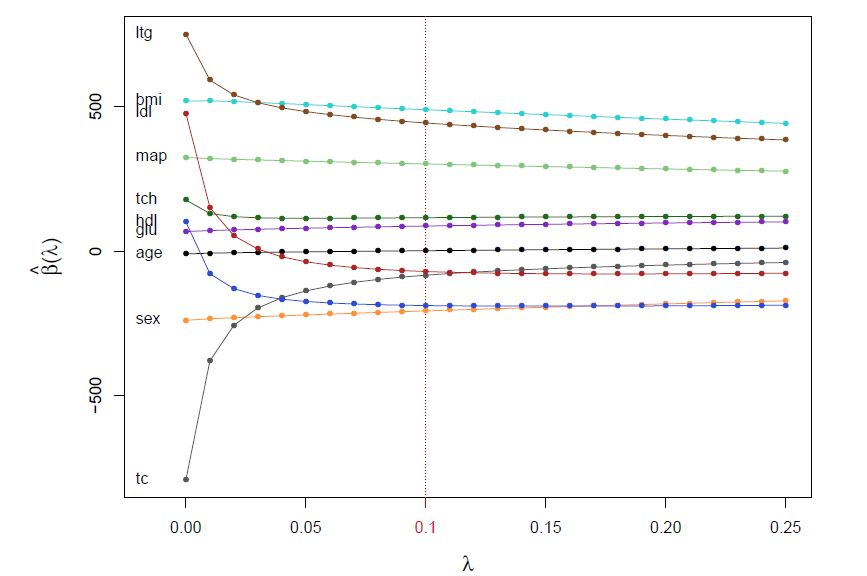
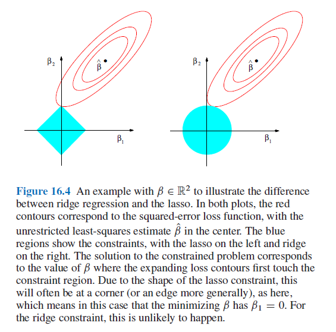
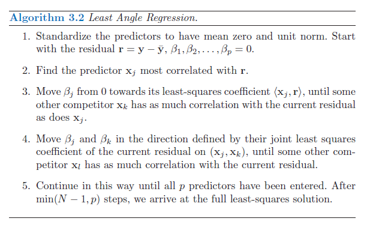

4 Shrinkage Methods
4.1 Introduction
Shrinkage methods denote estimation methods under constraints that shrink estimators toward a given value. The origin goes back to the James–Stein estimator (James and Stein 1961). The rationale is that one can sacrifice bias for variance, i.e. optimize in some sense the Mean Squared Error (MSE), which, for an estimator \(\hat{\boldsymbol{\beta}}\) is \[\begin{equation} \mbox{MSE}\left(\hat{\boldsymbol{\beta}}\right)=\mathbb{E}\left[\left\Vert\hat{\boldsymbol{\beta}}-\boldsymbol{\beta}\right\Vert^2\right]=\mathbb{E}\left[\left(\hat{\boldsymbol{\beta}}-\boldsymbol{\beta}\right)^T\left(\hat{\boldsymbol{\beta}}-\boldsymbol{\beta}\right)\right] \end{equation}\](see Efron and Hastie (2016), Section 7.1, for details on the James–Stein estimator)
For the least squares (LS) estimator of the linear model \(\mathbf{y}=\mathbf{X}\boldsymbol{\beta}+\boldsymbol{\varepsilon}\), \(\boldsymbol{\varepsilon}\sim N\left(\mathbf{0},\sigma^2\mathbf{I}\right)\), and supposing without loss of generality that \(\mathbf{y}\) is centered and the covariates (columns in \(\mathbf{X}\)) are standardized, we have \(\mbox{MSE}\left(\hat{\boldsymbol{\beta}}_{LS}\right)=\sigma^2\mbox{tr}\left[\left(\mathbf{X}^T\mathbf{X}\right)^{-1}\right]\), which obviously grows with the dimension \(p\).
In terms of out-of-sample prediction error (PE), we have the following result \[\begin{eqnarray} \mbox{PE}\left(\mathbf{x}_0,\hat{\boldsymbol{\beta}}\right) &=&\sigma^2+\mathbb{E}_{Y\vert\mathbf{X}=\mathbf{x}_0}\left[\left(Y-\mathbf{x}_0\hat{\boldsymbol{\beta}}\right)\right]^2 +\mathbb{E}_{Y\vert \mathbf{X}=\mathbf{x}_0}\left[\left(Y-\mathbf{x}_0\hat{\boldsymbol{\beta}}\right)^2\right] \\ &=& \sigma^2+\mbox{Bias}^2\left(\mathbf{x}_0,\hat{\boldsymbol{\beta}}\right)+ \mbox{var}\left(\mathbf{x}_0,\hat{\boldsymbol{\beta}}\right) \end{eqnarray}\]As model becomes more complex (more terms included), on one hand, local structure/curvature can be picked up, but on the other hand, coefficient estimates suffer from high variance as more terms are included in the model (see overfitting phenomenon).
Reported from http://statweb.stanford.edu/~tibs/sta305files/Rudyregularization.pdf 
Hence, introducing a little bias in the estimators might lead to a substantial decrease in variance, and hence to a substantial decrease in PE. The idea is then not to let the \(\hat{\beta}_j\) take too large values in order to avoid too large variances. To control the variance, the slope coefficients are regularized in that a constraint is added to the optimization problem (e.g. LS) that controls how large the coefficients can be.
4.2 Ridge regression
The first proposed regularization method is the ridge constraint (or Tikhonov regularization https://en.wikipedia.org/wiki/Tikhonov_regularization), which amounts to set the constraint \(\sum_{i=1}^p\beta_j^2<t_{\lambda}\). In terms of optimization, for a given value of \(\lambda\), the ridge estimator \(\hat{\boldsymbol{\beta}}(\lambda)\) is given by \[\begin{equation} \hat{\boldsymbol{\beta}}(\lambda)=\mbox{argmin}_{\boldsymbol{\beta}}\left\Vert\mathbf{y}-\mathbf{X}\boldsymbol{\beta}\right\Vert^2-\lambda\Vert\boldsymbol{\beta}\Vert^2 \end{equation}\] The solution is \[\begin{eqnarray} \hat{\boldsymbol{\beta}}(\lambda)&=&\left(\mathbf{X}^T\mathbf{X}+\lambda\mathbf{I}\right)^{-1}\mathbf{X}^T\mathbf{y}\\ &=& \left(\mathbf{X}^T\mathbf{X}+\lambda\mathbf{I}\right)^{-1}\left(\mathbf{X}^T\mathbf{X}\right)\hat{\boldsymbol{\beta}}_{LS} \end{eqnarray}\]Hence, the variance of \(\hat{\boldsymbol{\beta}}_{LS}\) is shrunk by an amount of \(\left(\mathbf{X}^T\mathbf{X}+\lambda\mathbf{I}\right)^{-1}\left(\mathbf{X}^T\mathbf{X}\right)\) which depends on \(\lambda\). With \(\lambda=0\), there is no shrinkage and \(\hat{\boldsymbol{\beta}}(0)=\hat{\boldsymbol{\beta}}_{LS}\), while when \(\lambda\rightarrow\infty\), \(\hat{\boldsymbol{\beta}}(\lambda)\rightarrow\mbox{0}\), the maximal shinkage.
Reported from Efron and Hastie (2016), Section 7.2: Ridge regression applied to the diabetes data 
Ridge estimators have lower variance the the LS, but this does not guarantee that the corresponding predictions \(\hat{\boldsymbol{\mu}}\left(\lambda\right)=\mathbf{X}\hat{\boldsymbol{\beta}}(\lambda)\) are more accurate than the ones obtained by the LS \(\hat{\boldsymbol{\mu}}(0)=\mathbf{X}\hat{\boldsymbol{\beta}}(0)\), since \(\hat{\boldsymbol{\beta}}(\lambda)\) is biased towards \(\mathbf{0}\). However, in high dimensions, the prior belief is that most of the \(\beta_j\) lie near zero, and biasing the LS estimator toward zero then becomes a necessity.
Another notable advantage of the ridge estimator is that the inclusion of \(\lambda\) makes the optimization problem solvable even if \(\mathbf{X}^T\mathbf{X}\) is not invertible (e.g. \(\mathbf{X}\) is not of full rank when \(p>n\)). This was the original motivation for ridge regression as proposed by Hoerl and Kennard (1970) who also recommended to select \(\lambda\) graphically. Standard practice now is to use (10-fold) cross-validation.
4.3 The lasso estimator
Instead of regularizing the estimator using \(\sum_{i=1}^p\beta_j^2=\Vert\boldsymbol{\beta}\Vert^2<t_{\lambda}\), one could use other \(l_q\)-norms, i.e. \(\Vert\boldsymbol{\beta}\Vert_{q}=\sum_{i=1}^p\vert\beta_j\vert^{q}<t_{\lambda}\). In particular, when \(q=0\), we have \(\Vert\boldsymbol{\beta}\Vert_{0}=\sum_{i=1}^p\vert\beta_j\vert^{0}<t_{\lambda}\) with, by definition, \(\sum_{i=1}^p\vert\beta_j\vert^{0}=\sum_{i=1}^pI\left(\beta_j\neq 0\right)\), the number of slope coefficients different from \(0\), and hence corresponds to subset selection.
Tibshirani (1996) proposed to use \(q=1\) leading to the very famous lasso estimator. The great advantage of the lasso, on top of the fact that the resulting optimization problem \[\begin{equation} \hat{\boldsymbol{\beta}}(\lambda)=\mbox{argmin}_{\boldsymbol{\beta}}\left\Vert\mathbf{y}-\mathbf{X}\boldsymbol{\beta}\right\Vert^2-\lambda\Vert\boldsymbol{\beta}\Vert_1 \end{equation}\]is convex (since both the loss \(\left\Vert\mathbf{y}-\mathbf{X}\boldsymbol{\beta}\right\Vert^2\) and the constraint \(\Vert\boldsymbol{\beta}\Vert_1=\sum_{j=1}^p\vert\beta_j\vert\) are convex in \(\boldsymbol{\beta}\)), is that the shrinking forces a set of \(\beta_j\) to exactly \(0\). Hence, the lasso estimator provides simultaneously a regularized estimator and model (subset) selection.
Reported from Efron and Hastie (2016), Section 16.2 
As for the ridge estimator, \(\lambda\) needs to be chosen and, for model selection purposes (or out-of-sample prediction error optimization), a criteria that assesses the model validity can be used. The most comon choices are the \(C_p\) and 10-fold CV. Practically, for well chosen values of \(\lambda\), \(\hat{\boldsymbol{\beta}}(\lambda)\) and the corresponding model validity criterion are computed. \(\lambda\) is chosen as to optimize (minimize) the later.
To compute the entire lasso path (i.e. for all values of \(\lambda\) that add one \(\beta_j\neq 0\) at each step), Efron et al. (2004) propose the Least Angle Regression algorithm (LARS), which is based on correlations between the covariates to enter and the residuals from the previous fit. LARS is introduced as a more democratic version of forward stepwise regression. Indeed, while forward stepwise regression builds a model sequentially, adding one variable at a time and updating the LS estimator to include all the active variables, the LARS only enters as much of a covariate as it deserves. At the first step it identifies the variable most correlated with the response, and moves the coefficient of this variable continuously toward (not fully) its LS estimate. The residuals are updated and this causes the correlations with other variables to evolve. As soon as another variable reaches the same correlation with the residual as the ones in the active set, this variable then joins the active set.
Reported from Hastie, Tibshirani, and Friedman (2009), Section 3.4. Note that \(\langle \mbox{x}_j,\mathbf{r}\rangle= \mbox{x}_j^T\mathbf{r}\). 
In step 3 and 4, the values of the slopes in the active set, say \(\mathcal{A}\), are augmented as \(\boldsymbol{\beta}_{\mathcal{A}}(\epsilon)=\boldsymbol{\beta}_{\mathcal{A}}+\epsilon\cdot\delta_{\mathcal{A}}\) for small values of \(\epsilon\), with \(\delta_{\mathcal{A}}=\left(\mathbf{X}^T_{\mathcal{A}}\mathbf{X}_{\mathcal{A}}\right)^{-1}\mathbf{X}^T_{\mathcal{A}}\mathbf{r}_{\mathcal{A}}\), \(\mathbf{r}_{\mathcal{A}}=\mathbf{y}-\mathbf{X}_{\mathcal{A}}\boldsymbol{\beta}_{\mathcal{A}}\).
The LARS bears very close similarities with forward stagewise regression (see Hastie et al. (2007), Tibshirani (2015) and Efron and Hastie (2016), Section 16.4). Hence, if the covariates are correlated, the lasso path might not produce the suitable model selection path (risk of overfitting).
References
James, W., and C. Stein. 1961. “Estimation with Quadratic Loss.” In Proc. 4th Berkeley Symposium on Mathematical Statistics and Probability, Vol. I, 361–79. University of California Press.
Efron, B., and T. Hastie. 2016. Computer Age Statistical Inference: Algorithms, Evidence, and Data Science. Cambridge University Press.
Hoerl, A. E., and R. Kennard. 1970. “Ridge Regression: Biased Estimation for Nonorthogonal Problems.” Technometrics 12: 55–67.
Tibshirani, R. 1996. “Regression Shrinkage and Selection via the Lasso.” Jrssb 58: 267–88.
Efron, B., T. Hastie, I. Johnstone, and R. Tibshirani. 2004. “Least Angle Regression (with Discussion).” Annals of Statistics 32: 407–99.
Hastie, Trevor, Tibshirani Robert, and Jerome Friedman. 2009. The Elements of Statistical Learning: Data Mining, Inference, and Prediction. Second Edition. Springer Series in Statistics. Springer.
Hastie, T., J. Taylor, R. Tibshirani, and G. Walther. 2007. “Forward Stagewise Regression and the Monotone Lasso.” Electronic Journal of Statistics 1: 1–29.
Tibshirani, R. J. 2015. “A General Framework for Fast Stagewise Algorithms.” Journal of Machine Learning Research 16: 2543–88.